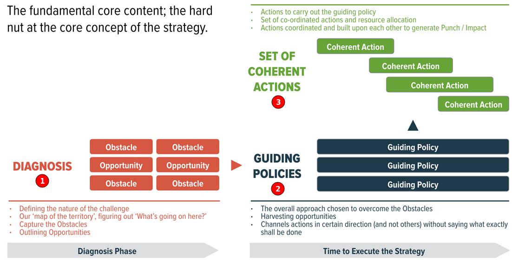

How to create a good strategy?

1. What is a strategy?
A strategy is a response to a challenge. It has 3 components:
- Diagnosis - what is the nature of the problem?
- Guiding Policies - our basic approach to solve the problem.
- Coherent Actions - implementation details of the policies.
In addition a strategy has a source of power (see below for details)
2. What is a good strategy?
Two aspects of a good strategy:
- It coordinates policy and actions using objectives.
- It enables new strength through subtle shifts in viewpoints.
Advantages such as being a first mover, scale, scope, network effects, reputation, patents, brands, and many others are useful but they don't make a strategy good.
3. Sources of power (Super Powers!)
Note: This section is under development
- Using leverage - find levereges in complex adaptive systems.
- Proximate objectives
- Chain-link systems
- Using design
- Focus
- Growth
- Using advantage
- Using dynamics - Start higher. Observe changes in the that gives you signals for emarging strategies. Examples: Cisco's Router. The power came from 100 lines of C code. IBM and AT&T, Silicon Valey, and Tokyo used the same super power in their strategies.
- Inertia and entropy
4. Example of a Good Strategy
The Defense Advanced Research Projects Agency (DARPA)
Challenge
Matching military problems with technological opportunities, including the new operational concepts those technologies make possible. Parts of this challenge are extremely difficult because: (1) some military problems have no easy or obvious technical solutions; and (2) some emerging technologies may have far-reaching military consequences that are still unclear. DARPA focuses its investments on this “DARPA-hard” niche—a set of technical challenges that, if solved, will be of enormous benefit to U.S. national security, even if the risk of technical failure is high.
Guiding Policies
Retains program managers for only four to six years to limit empire building and to bring in fresh talent. The expectation is that a new program manager will be willing to challenge the ideas and work of predecessors. In addition, DARPA has a very limited investment in overhead and physical facilities in order to prevent entrenched interests from thwarting progress in new directions. These policies are based on a realistic appraisal of the obstacles to innovation. They are a far cry from vague aspirations such as “retain the best talent” and “maintain a culture of innovation.”
Coherent Actions
Defeat the Taliban and rebuild a decaying infrastructure
Notes
To help clarify this distinction it is helpful to use the word “goal” to express overall values and desires and to use the word “objective” to denote specific operational targets. Thus, the United States may have “goals” of freedom, justice, peace, security, and happiness. It is strategy which transforms these vague overall goals into a coherent set of actionable objectives—defeat the Taliban and rebuild a decaying infrastructure. A leader’s most important job is creating and constantly adjusting this strategic bridge between goals and objectives.
5. Examples of a Bad Strategy
Strategy A:
- Challenge: 40% of students in LA are dropping out. How to improve it?
- Actions: let's hire better teachers or let's buy better books.
Score: 0 out of 3. This is not a strategy since it's doesn't include a diagnosis of the probelm and also missing a guiding policies and coherent actions. Score: 0 out of 3.
Strategy B:
- Challenge: Greece borrowed more money than they can pay back. How to prevent that in the future?
- Actions: bail out the banks, do a better math before borrowing money or don't anticipate growth if there was no growth in the last 10 years.
Score: 0 out of 3. This is not a strategy since it's doesn't include a diagnosis of the probelm and also missing a guiding policy.
Strategy C:
- Challenge: the unemployment rate in the US during Covid reached 14.4%. How to lower it back to 3.8%?
- Statement: we need to drop the unemployment rate to a single digit and we'll do that by working together as a strong nation.
This is not a strategy. It's an objective. There is no diagnosis of the problem, no guiding policy, and no coherent actions.
6. Good Strategy Bad Strategy Book
Table of contents
Part 1: Good and bad strategy
- Chapter 1: Good strategy is unexpected
- Chapter 2: Discovering power
- Chapter 3: Bad strategy
- Chapter 4: Why so much bad strategy?
- Chapter 5: The kernel of good strategy
Part 2: Sources of power
- Chapter 6: Using leverage
- Chapter 7: Proximate objectives
- Chapter 8: Chain-link systems
- Chapter 9: Using design
- Chapter 10: Focus
- Chapter 11: Growth
- Chapter 12: Using advantage
- Chapter 13: Using dynamics
- Chapter 14: Inertia and entropy
- Chapter 15: Putting it together
Part 3: Thinking like a strategist
- Chapter 16: The science of strategy
- Chapter 17: Using your head
- Chapter 18: Keeping your head.